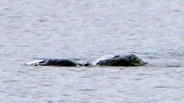

A History in Photos
Click for details
Taken on Nov. 12 1933 by Hugh Gray,
this is the first known photo
of the Loch Ness Monster.
Click for details
Published in the Daily Mail
in 1934, this photo was later
revealed to be a hoax.

Click for details
Taken on Aug. 13 2018 by Chie Kelly,
the photographer kept it to herself
for several years, fearing ridicule.
Home